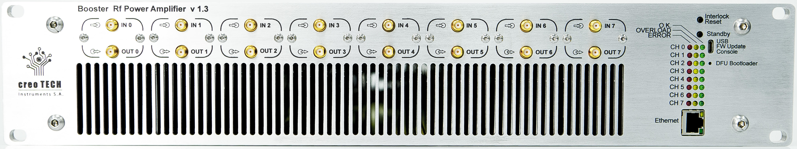
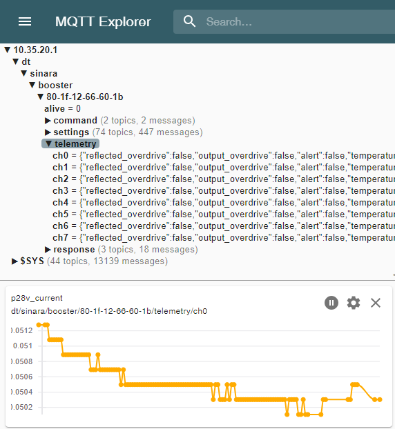
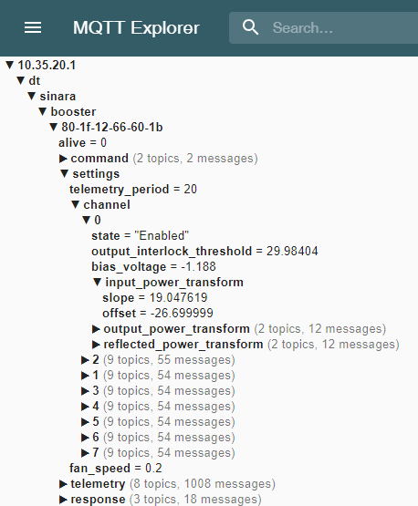

Booster NGFW (Next-Generation Firmware) User Manual
This document is intended to provide an overview of the Booster NG firmware, which is a rewrite of Booster firmware to align it with other projects, resolve qualify issues, and enable continued maintenance and improvements.
Hardware

Booster is an 8 channel RF power amplifier in the Sinara open hardware ecosystem. The open hardware designs and hardware discussions are located at https://github.com/sinara-hw/Booster/wiki. The hardware is available from Creotech, QUARTIQ, Technosystem, and M-Labs.
Getting Started
There are three ways to interface with the Booster application that are covered in the chapters of this manual:
- Pressing any of two the front-panel buttons
- Communicating with Booster over the USB port
- Communicating with Booster over ethernet via MQTT
Fault Mode
When Booster encounters a software fault, it goes into a safe mode where no channels will be
enabled. To acknowledge and clear the fault, utilize the service command from the front panel USB
port.
Front Panel
The front panel of Booster is used to physically clear channel interlocks to enable channels. It is also used to power down Booster and observe the operational status of the channels and ethernet interface.
User Buttons
There are two buttons on the front of booster. One is labeled "Interlock Reset" and the other is labeled "Standby".
The "Standby" button places all channels into an RF-disabled state. In this state, the channel is not powered and no output will be generated. Pressing the "Standby" button repeatedly will not have any effect.
The "Interlock Reset" has the effect of powering up all of the channels and resetting any tripped interlocks. After powering up, channels require a few hundred milliseconds to fully enable, so there is a short delay after the button press before outputs fully enable. The "Interlock Reset" button may be pressed while all channels are already powered to reset any tripped interlocks to re-enable RF output.
There is also a much smaller, recessed button labeled "DFU Bootloader". This button may be pressed while power is cycled to Booster to force the device into DFU mode. Booster NGFW exposes a mechanism to reset to DFU mode via the USB port, so this button is not generally necessary.
Channel LED Indications
Each output channel is composed of 3 LEDs - one red, one yellow/orange, and one green. If no RF module is installed for a given channel, no LEDs on the channel will be illuminated. If an RF channel is detected, at least one of the LEDs will illuminate.
The red LED is illuminated if a channel fault is detected. A fault cannot be cleared by the "Interlock Reset" button, the channel is powered down, and the channel cannot be used. The only way to clear this type of error is to power cycle Booster. The red LED nominally indicates a fault at a hardware level that likely requires further investigation. Any indication of the red LED should warrant further investigation of the device.
The yellow LED and the green LED are used to indicate the status of a channel. When the yellow LED is illuminated, the RF input is disabled on the channel. When a channel is in standby or powered down, the yellow LED will illuminate without the green LED.
The green LED indicates that the channel is powered. If only the green LED is illuminated, the channel is operational and outputting normally. If the green LED and the yellow LED are both illuminated, this indicates that an channel interlock has tripped. The channel may be reset from this state by pressing the "Interlock Reset" button.
Example

Figure 1: Sample Booster front-panel indications.
In the example above, it can be seen that CH0 is enabled.
Channel 2 is enabled, but one of the protection interlocks has tripped. This channel interlock can be cleared by pressing the "Interlock Reset" button after the trip source has been removed.
Channels 1 and 3-7 are all powered up, but outputs are disabled.
Ethernet Port
The ethernet port contains a green and an orange/yellow LED. The yellow LED illuminates when Booster has successfully connected with an ethernet switch. The green LED will flash whenever there is ethernet traffic detected.
USB Port
The USB port on booster enumerates as a serial port and can be opened with any terminal emulation program (e.g. Pyserial's miniterm, TeraTerm, picoterm, putty, or your desired serial port reader). The USB port serves two purposes:
- Human-readable logging
- Basic network and MQTT configuration
No control of the channels is exposed over the USB serial port. Channels may only be controlled over MQTT or through the front-panel buttons.
When connecting to the USB port, a help menu is displayed to the user to outline what can be configured over the USB port. Any configuration made over the USB port will not take effect immediately - in order for new configurations to apply, booster must be reset.
The USB port allows for configuration of:
- The MQTT ID of Booster
- The MQTT broker IP address
- Default fan speeds
Additionally, the USB port allows the user to:
- Read the MAC address
- Reboot the device
- Enter DFU mode remotely for upgrading firmware over USB
- Request device service information
Ethernet Telemetry and Control
Booster uses MQTT for telemetry reporting, settings configuration, and control of the channels. All
booster MQTT topics are prefixed with dt/sinara/booster/<ID>, where 12-34-56-78-90-ab). The ID is configurable via the USB port.
Please refer to Stabilizer's documentation for instructions on getting MQTT configured.
We recommend using mqtt-explorer to view telemetry and run-time
settings.
Measurement Units
Booster uses SI units (Volt, Ampere, Celsius) for telemetry and settings. Power measurements are specified in dBm.
Telemetry
Telemetry is generated on the
<prefix>/telemetry/ch<N> topics, where N is an integer from 0 to 7. Telemetry is only reported for
connected channels. Telemetry is transmitted in human-readable JSON format for logging purposes.

Figure 1: Example display of Booster telemetry on all 8 channels reported via MQTT Explorer.
Settings
Booster leverages miniconf to manage run-time settings and
configuration identical to Stabilizer. Please refer to Stabilizer's Miniconf
Documentation to get
started.
When settings are saved in booster, the saved channel configuration will be applied to the channel when Booster boots. Note that saving channel settings overwrites any existing channel configuration and calibrations including those from the old legacy firmware. The legacy firmware settings are incompatible.

Figure 2: Example display of Booster settings tree reported via MQTT Explorer.
Control
Booster supports channel bias tuning and saving active channel settings configuration to EEPROM
via the Booster python package located in the py folder of the repository. Execute the
following to install the package and see how to use it:
pip install ./py
python -m booster --help
Firmware Upgrade Instructions
These instructions provide information on how to upgrade the firmware on Booster to a newer release.
Prerequisites
- Ensure
dfu-utilis installed. On Ubuntu, install it fromaptusingsudo apt-get install dfu-util - If building your own firmware,
cargo-binutils) must be installed:
cargo install cargo-binutils
rustup component add llvm-tools-preview
The following instructions describe the process of uploading a new firmware image over the DFU Bootloader USB interface.
-
Generate the firmware image:
cargo build- Note: For production usage, you should append
--releaseto build the firmware with more optimization and slightly less debugging information. - Note: You may also use the latest pre-built assets instead of building firmware.
- Note: For production usage, you should append
-
Generate the binary file for your firmware build:
cargo objcopy -- -O binary booster.bin- Note: If you built with
--release, use the commmand:cargo objcopy --release -- -O binary booster.bin
- Note: If you built with
-
Reset Booster into DFU mode. This can be done via the USB serial port or by doing the following:
- Insert a pin into the DFU Bootloader hole to press the DFU button
- While the DFU button is pressed, power cycle booster by turning off the power switch for at least 10 seconds and then turn the power switch on.
-
Verify Booster is in DFU mode:
dfu-util -lshould show 4 entries beginning withFound DFU: [0483:df11] -
Upload the DFU file to Booster:
dfu-util -a 0 -s 0x08000000:leave --download booster.bin